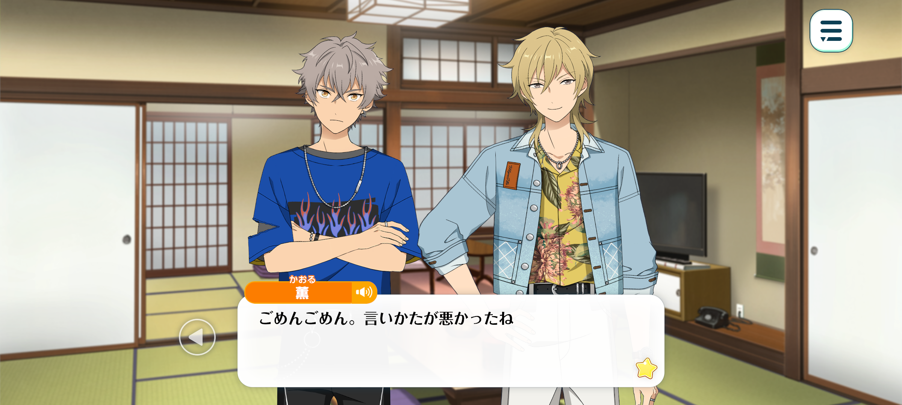
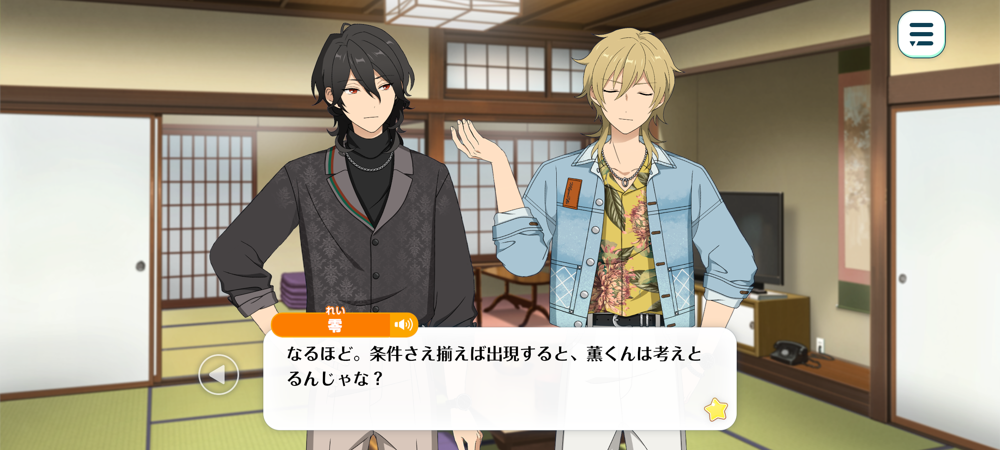
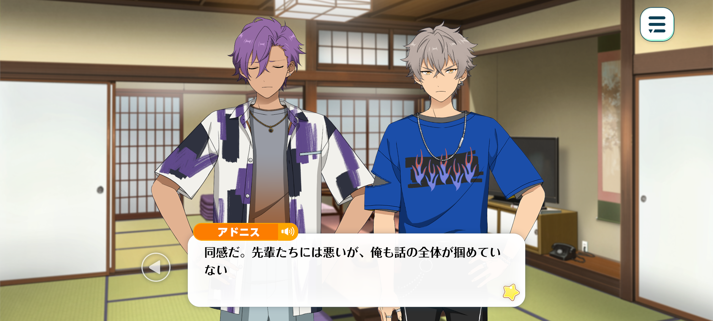
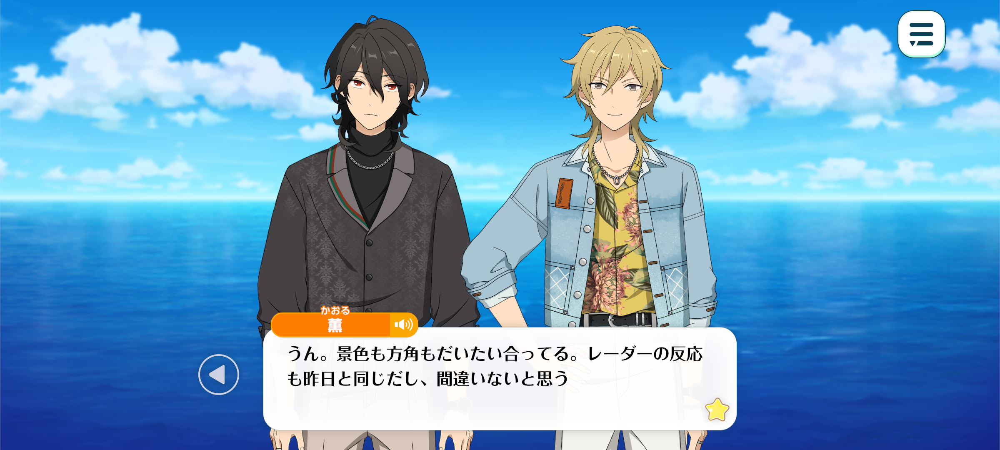
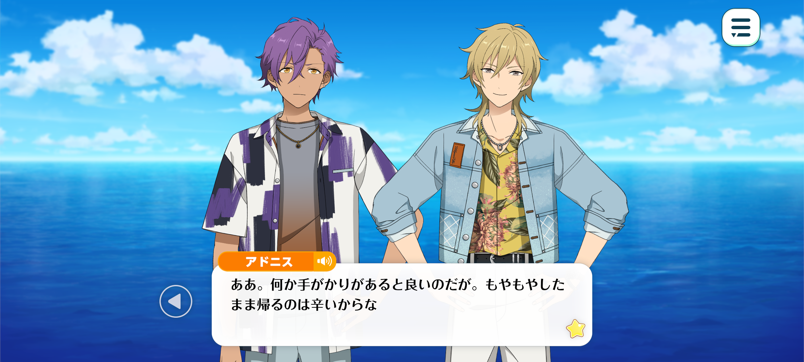

Velvet Ship
Haul Home The Sheets / Chapter 3



Koga: “Can we really still call it a myth?”
What t’hell are you sayin’? That makes no damn sense. The fact that it’s been passed down through generations is what makes it a myth in the first place.
Once a story becomes well-known, all kinds of people will start claimin’ they know about it. That’s just how ghost stories go. Do ya really gotta nitpick every little thing?
Kaoru: Sorry sorry. I guess I didn’t explain that the best.
I wasn’t trying to say that the myth wasn’t true. I don’t doubt that it's real.
But, y’know… aren’t ghost stories usually a little more vague? People say someone supposedly saw something, or they’ll tell you they’ve heard a rumour about it. That sort of thing.
But this ghost ship is different. The details are incredibly specific, right down to the exact conditions you need to see it.
We heard that it appears out at sea on foggy days, sure, but none of us really believed it.
And yet, all four of us saw it at exactly the same time. Don’t you think that’s a little strange?
Usually, when it comes to supernatural stuff like this, your own fears have a way of shaping what you think you see. You hear a rumour or a scary story, and suddenly, you start seeing things that might not even be there.
Take a graveyard, for example. Someone tells you there’s a ghost hanging around, and suddenly every gust of wind or passing shadow has you thinking, Oh, what was that?!
But we saw the ghost ship without any of those preconceived fears or expectations.
It’s not some hidden attraction at a theme park, y’know? It just doesn’t make sense for a supernatural phenomenon to be something anyone can witness, so long as the right conditions are met.

Rei: I see… So, in other words, you believe that anyone could lay eyes upon the ship, provided the necessary conditions are met?
Kaoru: That’s what I’m thinking, yeah. Well, we’ve only seen it the once, and you and Koga-kun still haven’t told us what you found out.
But based on what Adonis-kun and I discovered, I don’t think I’m too far off the mark.
Rei: I see… Unfortunately, our investigations did not reveal anything particularly new.
Still, Kaoru-kun, I find myself rather intrigued by these conditions you mentioned.
Both the exhibition at the town hall and the staff there placed particular emphasis on the fog. It struck me as rather curious.
…Hmm. Tell me, what if we were to look at this from a slightly different perspective?
Rather than the ghost ship appearing when the fog grows thick—
What if it is simply becoming visible?
Kaoru: Becoming visible…?
Rei: Precisely. In other words, the ship has been there all along. It is only that, under ordinary circumstances, our eyes cannot perceive it.
The fog obscures our vision, while the light grows dimmer. Perhaps it is precisely these changes in our surroundings that allow something usually hidden from view to finally reveal itself.
Kaoru: Wow… That's a pretty fascinating theory you've got there, Rei-kun.
Rei: Oh? You think so too? I find it far more plausible than the notion of a ship that simply appears and vanishes into thin air.

Koga: Oi! Don't go leavin' the two of us in the dust just 'cause you two get it!
Adonis: I feel the same way. I'm sorry, but I'm afraid I haven't quite grasped the full picture yet.
Kaoru: Ahaha, sorry, sorry. Guess I got a little carried away. Hmm, how do I put this…
Okay, imagine you've got a torch. If you turn it on in the middle of the day, it's pretty hard to tell whether it's even on, right?
But take that same torch into a dark room or a tunnel, and suddenly you can see the beam shining super clearly.
It's kind of the same idea. The ghost ship has been out there on the sea all along.
It's just that we can't see it when it's bright out, but when the fog rolls in, there it is.
Adonis: It's been out there on the sea this whole time… In other words, could it be some sort of earthbound spirit?
Kaoru: Ahaha, now that would be pretty scary, wouldn't it? But I don't think so. It seems to appear far too often for that.
And that's exactly why I think there's some kind of trick behind it. We've still got time before we leave tomorrow, so why don't we go and investigate it ourselves?
Time: The next morning
Location: Out at sea, near where they had last spotted the ghost ship

Rei: ...I believe it was about here we saw the vessel.
Kaoru: Mm-hmm. The scenery, our heading… everything more or less matches up. And the radar readings are the same as yesterday's, too, so I'm pretty sure we're in the right place.
Koga: Huh? Looks the same as anywhere else to me. Ain't the ocean pretty much the same no matter where ya go?
Kaoru: Haha, well, I guess you've got a point there. But once you get used to it, it's surprisingly easy to tell where you are.
The direction of the waves, the rhythm of the swells… they all vary depending on where you are. Even the seabed changes. I know it all looks pretty much the same to you, but every place has its own little je ne sais quoi, y'know?
Koga: Seriously?
Kaoru: Yep! The sea's kinda like a guitar to you.
I mean, I can only really tell guitars apart by how they look, but I'm sure you can tell the difference just by hearing them or running your fingers over them, right?
It's the same sort of thing. The more interested you are in something, the more little details you start to notice.
Take this ghost ship, for example. Most people would probably just go, “Huh, guess it's some kinda supernatural phenomenon.”
But we're interested in it, so we're looking at it a little differently. We're wondering if there's some sort of trick behind it all.

Adonis: I see. I hope we manage to find something. It would be rather unsatisfying to return home without knowing what we actually saw.
Rei: Indeed. We could hardly hold our appreciation event without first unraveling the mystery behind the ghost ship's appearance.
Kaoru: Haha, true enough. I mean, I guess we've already figured out the conditions under which the ship appears. And if all else fails, we could always just tell everyone that a ghost ship might show up whenever it's foggy.
But we've come this far, haven't we? I'd still like to see it through for myself. That way, I can head home with a clear conscience.